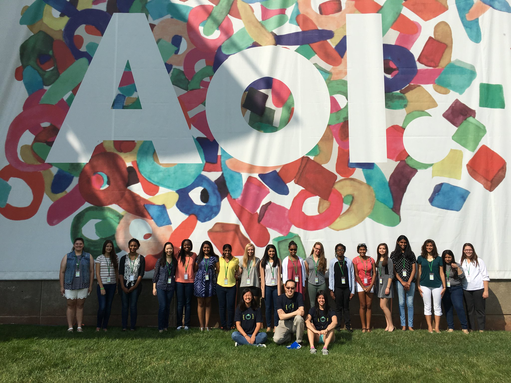
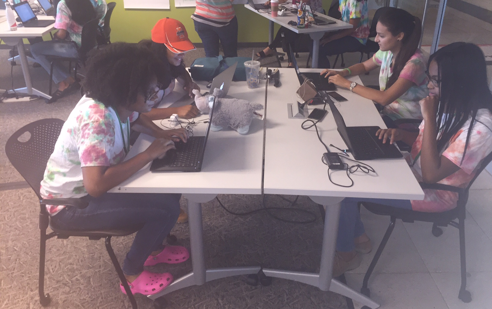
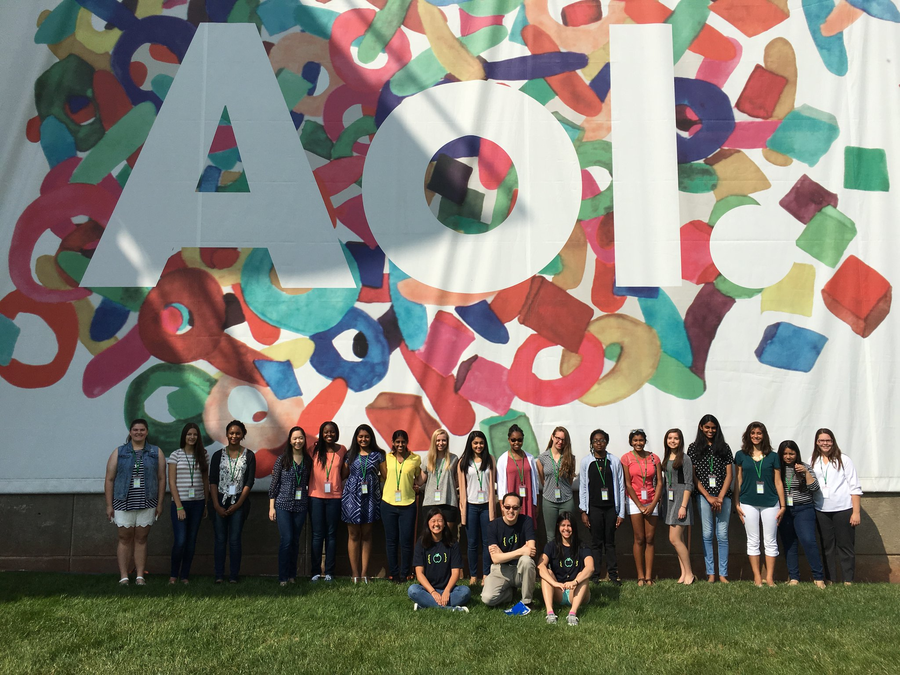
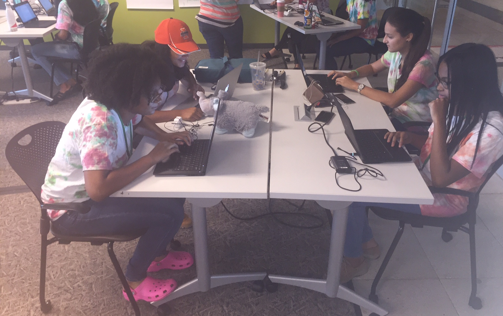
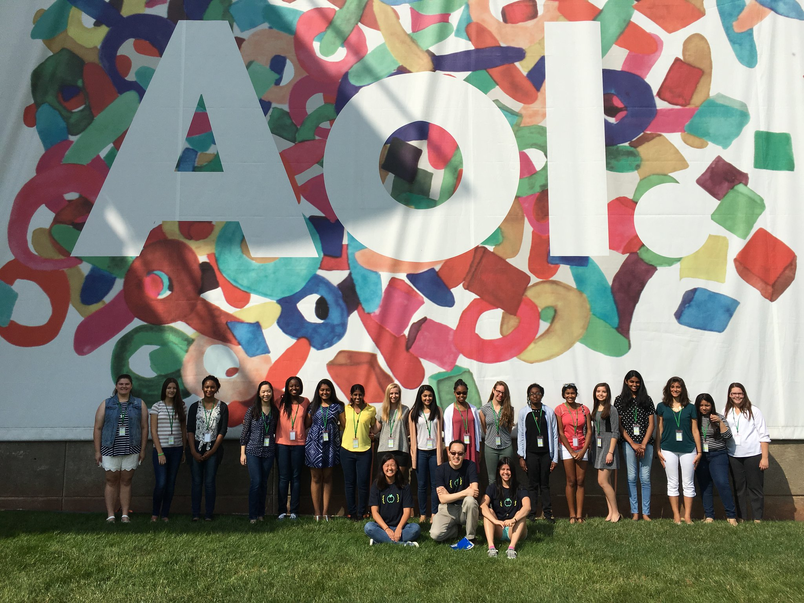
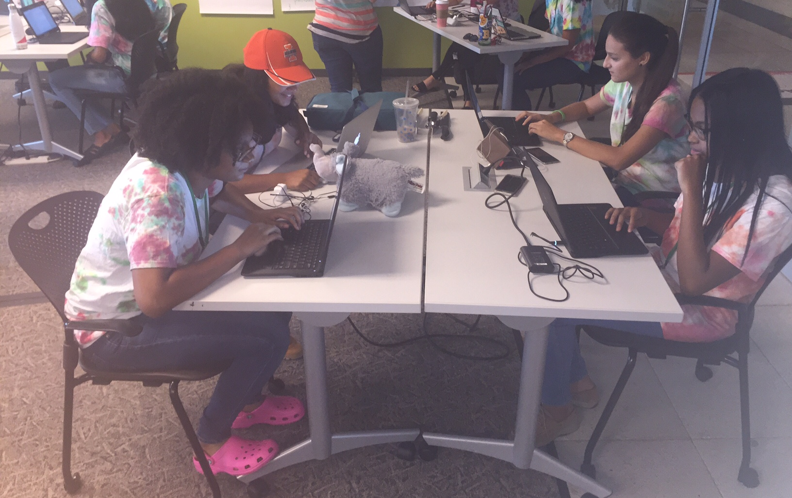

Hello, my name is Gisela Deneke.
From: El Salvador
School: American School of El Salvador
From a young age I was drawn to science and technology, which is why I decided to apply for the Girls Who Code Immersion Program. I have benefited greatly from this experience and discovered a new love for programming. In the future I aspire to use technology to make headway in future technologies. Our app has the potential to be an influential tool, and I believe it is important to use technology to improve the world around us.
Hi, my name is Chanel Grant.
Frrom: Glen Burnie, Maryland
Glen Burnie High School
I found interest in technology by watching movies like 'Hackers' and the 'Internship.' I liked their ability to solve analytical problems using computers and programming. I found out about Girls Who Code in late sophomore year, I took a risk and decided to apply. I am grateful for the awesome experience Girls Who Code showed me.TTYL is important to me because as a new incoming driver it would be nice to have an app that can help prevent me from texting and driving.
Hi, my name is Sneha Kripanandan
From: McLean, Virginia
School: Langley High School
Up until this summer I didn’t know what I wanted to do for the rest of my life. I liked math and I like science, but I didn’t know what to do with the two. Applying to the Girls Who Code Summer Immersion Program didn’t seem like the best decision I’d ever made at the time, (who wants to go to camp for seven weeks, 5 days a week, 9-5 every single day? Who wants to give up their summer in order to learn computer science when they didn’t even know whether they would like it or not?) but it was and I’m so glad my parents encouraged me to apply. Not only did I find a passion for computer science and app-development, but I also met some of the most amazing people- from my fellow girls who coders to Megan Smith, the CTO of the United States of America. TTYL is an app that had to be made. Coming from a teen herself, I know distracted driving is a major problem especially with the time my friends and I spend on social media, but I wouldn’t download a hands-free driving app if my parents forced me to. So that’s why TTYL is the perfect app- it’s the app that teens want to download for hands-free driving for themselves
Hey, my name is Camille Spurlock.
From: Accokeek, Maryland
School: Bishop McNamara
I'm a 15 year old high school junior, who would love to make a change in this world. I was intoduced to coding by GWC, and I'm what I like to call a "Fetus Programmer." Coding is something I would've never took intrest in if I wasn't for this amazing program. I'm from Maryland, the capital of Lacrosse, so of course I had to dabble in that. I also like to teach myself things, a quality that most programmers have. The idea I had for the app came from my personal experiences with someone on their phone while driving. Its scary, you feel like you're the one who has to watch the road. This app is important to me, because any of those experiences could've ended badly when it does'nt have to. It's also important to me because it casts a light on a known topic that people often times look over. Bringing awareness by making an app will catch this generations attention and hopefully will stop the problem.